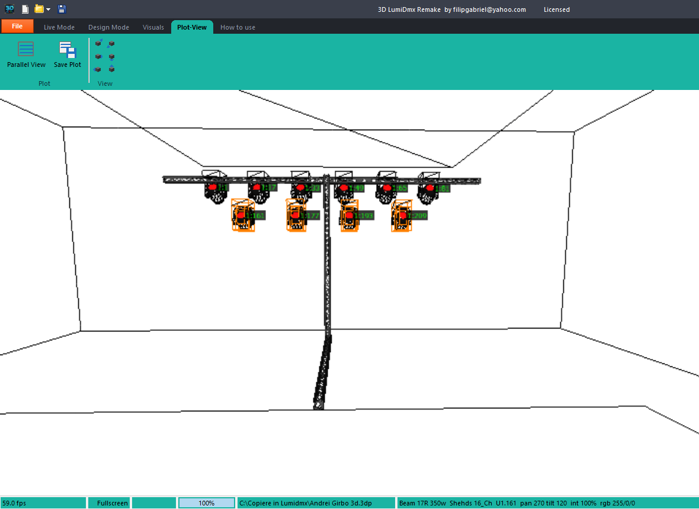
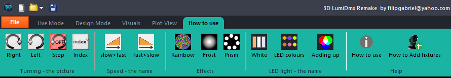

For: FullPlayer

Plot-View draws the stage and the rig as a plan: white background, black lines, the fixtures with their addresses. It is meant for the crew that hangs the fixtures.

This tab explains how the 3D reads a fixture profile. Each small button opens the help window at its part; the two big buttons in Help open the whole help: How to use (the profiles) and How to Add fixtures (building the scene, see Design Mode).
What it tells is important when you make or check a profile in the Fixture Editor: the 3D moves the wheels, the gobos and the prisms by the picture and by the name of each preset.
| Picture of the preset | What the 3D does |
|---|---|
| Right loop (RRLoop.bmp) | Turns clockwise. A wheel goes on through its colours / gobos. |
| Left loop (RLLoop.bmp) | Turns counter-clockwise. A wheel goes back through them. |
| Stop loop (RLoopOff.bmp) | Stops where it is - a wheel can stay between two colours or gobos. |
| Index (RIndex.bmp) | A gobo or a prism stands at the angle the DMX value gives: 0° at the start of the range, 360° at its end. |
| R0deg ... R360deg | Stands at that angle. |
It is the picture that is seen that counts.
| In the name of the preset | Speed |
|---|---|
| slow>fast (or nothing) | Slow at the start of the range, fast at its end. |
| fast>slow | Fast at the start, slow at the end - still turning at the last value. |
The fastest is 500° a second. Example: "Rotation slow>fast" on 128-191 (64 values): DMX 128 about 8°/s, 160 about 258°/s, 191 500°/s.
| Effect | What the 3D does |
|---|---|
| Rainbow | The glass of 6 colours (red, green, blue, magenta, orange, lavender). With the prism in, every ray has another colour. |
| Frost | The beam opens up to 12° and goes soft; past half of the frost no gobo is projected. A frost range from 0 (Frost ON 0-255) grows with the value. |
| Prism | The beam is split into as many rays as the prism picture shows; the prism rotation turns them. |
| Channel name | Light |
|---|---|
| White, Warm White, Cold White | Light of that white, 0 to 255. Warm / Hot about 3000 K, Cold / Cool about 8000 K, White pure white. |
| Amber, UV, Yellow, Orange, Violet, Pink, Lime ... | Light of that colour, besides the RGB. |
| Adding up | The light of all the channels adds up, as in the fixture: Red + White = light pink, Warm + Cold = neutral white. With a Dimmer channel, the Dimmer is the intensity. |
A name that also says Strobe, Shutter, Macro, Speed, Mode, Effect, Fine and so on is a function, not a light. The help window in the 3D has the full list and the formulas.